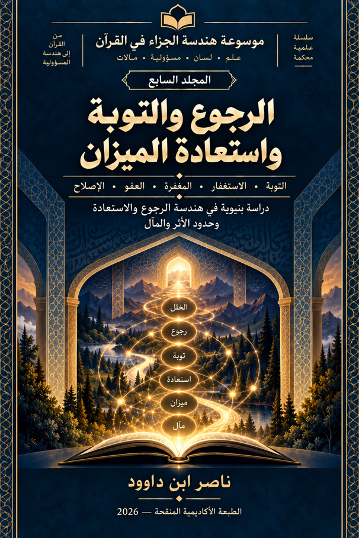

ناصر ابن داوود

نسخة نصية مستخرجة من ملف Word الذي قدمه المؤلف؛ راجع المصدر الأصلي.
جارٍ تجهيز القارئ…
موسوعة هندسة الجزاء في القرآن
المجلد السابع
الرجوع والتوبة واستعادة الميزان
من بنية المسؤولية والجزاء إلى هندسة الرجوع والاستعادة
ناصر ابن داوود — 2026
ملخص المجلد السابع
هندسة الجزاء في القرآن — الرجوع والتوبة واستعادة الميزان
يتناول المجلد السابع سؤالًا مركزيًا في هندسة الجزاء في القرآن: ماذا يحدث لمسار الإنسان عندما يقع الخلل ثم يحدث الرجوع؟ وهل تعني التوبة والرجوع استعادةً كاملة لما كان قبل الخلل، أم أن الاستعادة تعمل ضمن حدود تتعلق بالفعل، والأثر، والحقوق، والاتجاه، والمآل؟
ينطلق المجلد من دراسة الرجوع والتوبة، ثم يتتبع شبكة المفاهيم المتصلة بهما، ومنها الاستغفار، والمغفرة، والعفو، والصفح، والتكفير، والإصلاح، والهداية والاستقامة. ولا يفترض المجلد أن هذه الألفاظ مترادفة أو أنها تمثل مراحل متتابعة بالضرورة، بل يختبر استقلال كل مفهوم ووظيفته وعلاقته بالمفاهيم الأخرى داخل Corpus (المتن القرآني).
وينتقل البحث من المستوى المعجمي والسياقي إلى المستوى الوظيفي والشبكي، فيدرس علاقة الفاعل والاتجاه والمتعلَّق والمخرج، ويختبر الروابط بين العقد المختلفة، مع التمييز بين ما يثبته النص مباشرة وما تقترحه مجموعة الموارد وما يبقى مفتوحًا أمام البحث.
كما يفحص المجلد العلاقة بين الرجوع والأثر السابق والحقوق والمآل. ومن أهم ضوابطه ألا تتحول المغفرة أو التوبة إلى افتراض آلي بأن جميع آثار الفعل السابق قد زالت، أو أن الحقوق قد أُسقطت، أو أن التاريخ قد مُحي. لذلك يميز المجلد بين تغير المسار وبين إزالة الأثر، وبين الرجوع وبين التصفير الكامل للماضي.
ولضبط الاستنتاجات، يعتمد المجلد على الاختبارات السياقية، والمقارنات بين الموارد، والمجموعة المقاومة، والاختبارات العكسية، واختبارات قابلية نقل الوظيفة. والغرض من هذه الاختبارات ليس إثبات قانون شامل بأي ثمن، بل معرفة حدود ما يمكن أن يثبت، وما لا يمكن أن يثبت.
وفي مرحلته التركيبية، يبني المجلد نموذجًا مقيدًا للعودة والاستعادة، يجمع بين الفاعل والاتجاه والمتعلَّق والمخرج، ويربطها بالسياق والأثر والمآل، مع المحافظة على التمييز بين الدليل والتفسير والفرضية.
ولا ينتهي البحث إلى افتراض ROOT LAW (القانون الجذري) شامل للمجلد السابع؛ بل يحافظ على الحالات المفتوحة وعلى الحدود التي فرضتها الاختبارات. وبذلك تأتي استعادة الميزان بوصفها نتيجة تركيبية مقيدة لمسار الرجوع والاستعادة، لا بوصفها دعوى بأن التوبة تمحو الماضي كله أو تعيد الإنسان آليًا إلى نقطة الصفر.
والغاية النهائية من المجلد ليست تقديم تفسير مغلق للقارئ، بل تزويده بمادة علمية ومنهج يستطيع من خلالهما أن:
يقرأ → يجمع → يقارن → يختبر → يحكم → يواصل البحث.
وبهذا يصبح المجلد السابع حلقة في مشروع موسوعة هندسة الجزاء في القرآن، وضمن السلسلة الأوسع لـ موسوعة الاستخلاف، حيث لا تقتصر قيمة البحث على النتائج التي وصل إليها، وإنما تشمل أيضًا تعليم طريقة الوصول إليها وحدودها وإمكان إعادة اختبارها ومواصلة البحث من بعدها.
المقدمة العامة للمجلد السابع
الرجوع والتوبة واستعادة الميزان
يأتي هذا المجلد ضمن مشروع موسوعة هندسة الجزاء في القرآن، وضمن السلسلة الأوسع لـ موسوعة الاستخلاف، ليبحث في إحدى أكثر مسائل الجزاء اتصالًا بمسار الإنسان: ماذا يحدث عندما يقع الخلل، ثم يحدث الرجوع؟
فالسؤال هنا لا يقتصر على معنى التوبة، ولا على بيان فضل الاستغفار أو المغفرة، وإنما يتجه إلى البنية التي تنتظم هذه المفاهيم داخل النص القرآني: كيف يُوصف الرجوع؟ ما الذي يتغير بحدوثه؟ وما الذي قد يبقى من أثر الفعل السابق؟ وكيف تتصل التوبة بالمغفرة والعفو والصفح والتكفير والإصلاح والهداية والاستقامة؟ وهل تؤدي هذه المفاهيم وظيفة واحدة، أم أن لكل منها موضعًا ووظيفة وحدودًا مختلفة؟
ينطلق البحث من مبدأ أساسي: لا يجوز افتراض الترادف بين المفردات لمجرد تقاربها في الموضوع، كما لا يجوز افتراض وجود مراحل زمنية متتابعة لمجرد ورود الألفاظ في سياقات متجاورة. ولذلك يتعامل المجلد مع كل مفهوم بوصفه عقدة قابلة للفحص داخل Network (الشبكة)، ويبحث عن وظيفته من خلال مواضعه وسياقاته وعلاقاته بالمفاهيم الأخرى.
ويبدأ المسار من الرجوع والتوبة، ثم يتوسع إلى شبكة الاستعادة: Istighfār (الاستغفار)، Maghfira (المغفرة)، ʿAfw (العفو)، Ṣafḥ (الصفح)، Takfīr (التكفير)، Iṣlāḥ (الإصلاح)، Hidāya (الهداية)، Istiqāma (الاستقامة) وغيرها من المفاهيم التي تظهر في موارد متعددة. ولا تُعامل هذه الموارد باعتبارها أجزاء من سلم جاهز، بل باعتبارها مادة للاختبار والمقارنة.
من اللفظ إلى النموذج
يعتمد المجلد مسارًا بحثيًا يبدأ من النص ولا يبدأ من النتيجة المفترضة:
اللفظ → السياق → المواضع الأخرى → القرائن → العلاقات والتمييزيات → الفرضية → الاختبار → النتيجة → حدود النتيجة → أسئلة البحث التالية.
وبهذا لا تكون Corpus (المدونة) مجرد قائمة بالآيات التي ورد فيها لفظ معين، وإنما تصبح أداة لإعادة بناء العلاقات الوظيفية بين الموارد. فالمطلوب ليس فقط معرفة أين ورد اللفظ، بل فحص مع من اقترن، وما الذي تعلق به، ومن هو الفاعل، وما المخرج الذي ظهر في السياق، وهل تتغير الوظيفة باختلاف السياق أم تبقى مستقرة؟
ومن هنا يعتمد المجلد على مجموعة من أدوات الفحص، منها المقارنة السياقية، وتحليل الاقتران، وتدقيق الوظيفة، والاختبارات العكسية، والمجموعة المقاومة، واختبارات قابلية نقل الوظيفة بين السياقات.
الرجوع لا يعني بالضرورة محو الماضي
من أهم الأسئلة التي يختبرها المجلد العلاقة بين الرجوع والأثر السابق.
فحدوث التوبة أو الرجوع لا يُحوَّل تلقائيًا إلى دعوى بأن كل ما سبق قد أزيل، أو أن جميع الآثار قد اختفت، أو أن الحقوق قد سقطت، أو أن المسار السابق قد أصبح بلا أثر. لذلك يميز البحث بين:
تغير المسار ≠ إزالة الأثر
وبين:
المغفرة ≠ التصفير الآلي للماضي
وبين:
الرجوع ≠ افتراض بداية من الصفر
وهذه التمييزيات ليست أحكامًا مسبقة، وإنما حدود منهجية تمنع النموذج من تجاوز ما تسمح به الموارد المدروسة.
الاستعادة بوصفها مسارًا مقيدًا
يتجه المجلد تدريجيًا نحو مفهوم الاستعادة، لكن ليس بوصفها حالة واحدة بسيطة. فالبحث يدرس العلاقة بين الفاعل، والاتجاه، والمتعلَّق، والمخرج، ثم يربط هذه العناصر بالسياق والأثر والمآل.
ومن خلال هذا التركيب تظهر إمكانية النظر إلى العودة باعتبارها مسارًا وظيفيًا يمكن أن تتغير فيه بعض العلاقات دون أن يعني ذلك اختفاء كل ما نتج عن الفعل السابق.